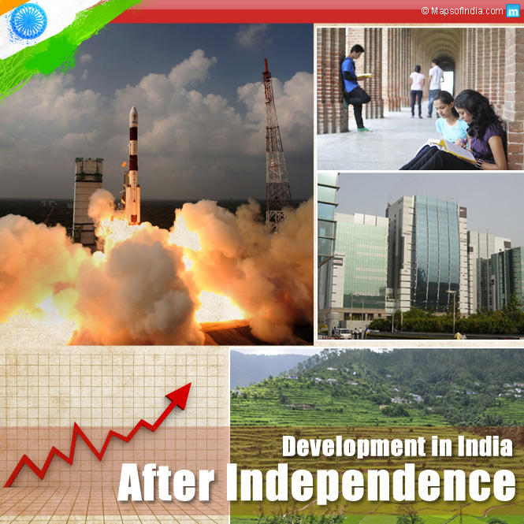

he history of the Republic of India begins on 26 January 1950. The country became an independent nation within the British Commonwealth on 15 August 1947. Concurrently the Muslim-majority northwest and east of British India was separated into the Dominion of Pakistan, by the partition of India. The partition led to a population transfer of more than 10 million people between India and Pakistan and the death of about one million people. Indian National Congress leader Jawaharlal Nehru became the first Prime Minister of India, but the leader most associated with the independence struggle, Mahatma Gandhi, accepted no office. The new constitution of 1950 made India a secular and a democratic country. The nation faced religious violence, casteism, naxalism, terrorism and regional separatist insurgencies, especially in Jammu and Kashmir and northeastern India. India has unresolved territorial disputes with China, which in 1962 escalated into the Sino-Indian War, and with Pakistan, which resulted in wars in 1947, 1965, 1971 and 1999. India was neutral in the Cold War, but purchased its military weapons from the Soviet Union, while its arch-foe Pakistan was closely tied to the United States and the People's Republic of China. India is a nuclear-weapon state, having conducted its first nuclear test in 1974, followed by another five tests in 1998. From the 1950s to the 1980s, India followed socialist-inspired policies. The economy was influenced by extensive regulation, protectionism and public ownership, leading to pervasive corruption and slow economic growth. Beginning in 1991, neoliberal economic reforms have transformed India into the third largest and one of the fastest-growing economies in the world, though corruption remains a pervasive problem. Today, India is a major world power with a prominent voice in global affairs and is seeking a permanent seat in the United Nations Security Council
|  | |
| Development After Independence | Republic of India |